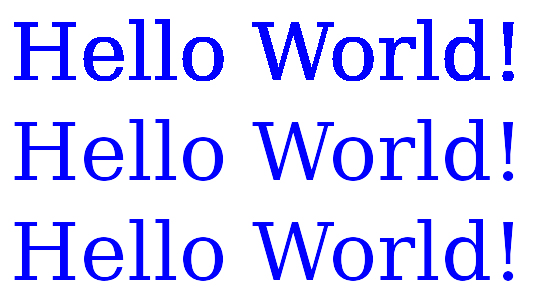

AGG draws font glyphs just like any path objects. Because of AGG's subpixel accuracy, that is all you need.
On linux, AGG uses FreeType library to get the font glyphs. It can be a bit tricky to get both FreeType and the right libpng installed. You may have to either upgrade the system or do custom compilation.
Loading a font is straight forward. See the code below. It should be noted that different Linux systems organize TrueType fonts differently. For this tutorial, we will just use DejaVuSerif.ttf in fonts/ directory.
fontEngine.load_font(fontPath, 0, agg::glyph_ren_outline);
fontEngine.hinting(true);
fontEngine.flip_y(true);
fontEngine.height(fontSize);
For actual text drawing, it is straightforward. Just get the glyph and draw the path, depending on the path type.
void
drawText (const char* str,
double x,
double y,
bool kerning,
{
bool first = true;
for (; *str != 0; ++str)
{
unsigned ch = *str;
if (glyph)
{
if (first)
{
first = false;
}
else
{
if (kerning)
{
fontCache.add_kerning(&x, &y);
}
}
fontCache.init_embedded_adaptors(glyph, x, y);
switch (glyph->data_type)
{
case agg::glyph_data_mono:
{
agg::render_scanlines_bin_solid(fontCache.mono_adaptor(), fontCache.mono_scanline(), rBase, color);
break;
}
case agg::glyph_data_gray8:
{
agg::render_scanlines_aa_solid(fontCache.gray8_adaptor(), fontCache.gray8_scanline(), rBase, color);
break;
}
case agg::glyph_data_outline:
{
ras.reset();
ras.add_path(curves);
agg::render_scanlines_aa_solid(ras, scanline, rBase, color);
break;
}
default:
{
}
}
x += glyph->advance_x;
y += glyph->advance_y;
}
}
}
Example
tutorial_font_1.cpp generates three rows of "Hello World!" text using different types of glyph rendering.
- agg::glyph_ren_agg_mono
- agg::glyph_ren_agg_gray8
- agg::glyph_ren_outline

 1.8.13
1.8.13